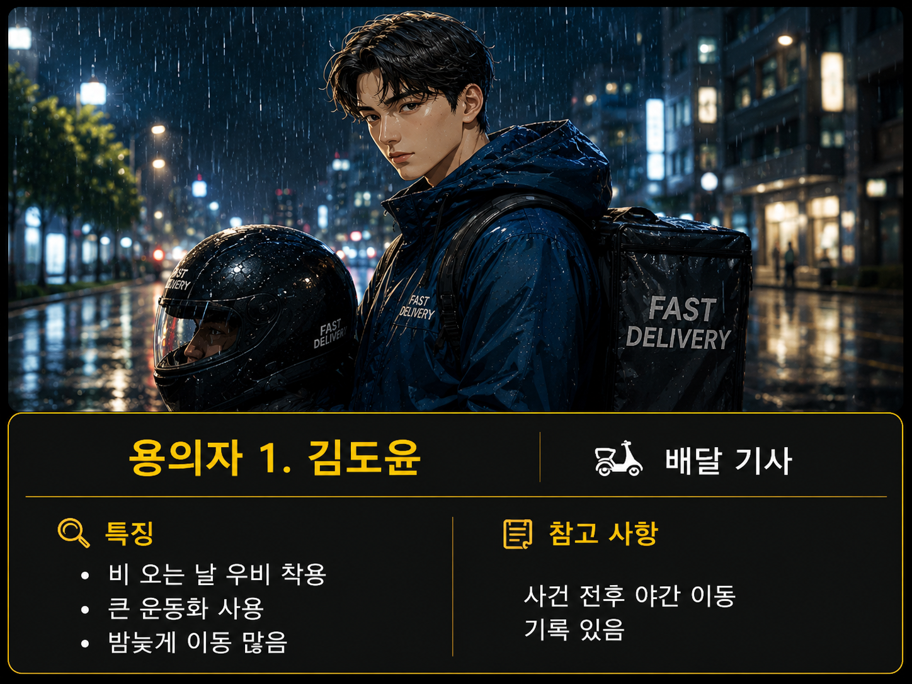
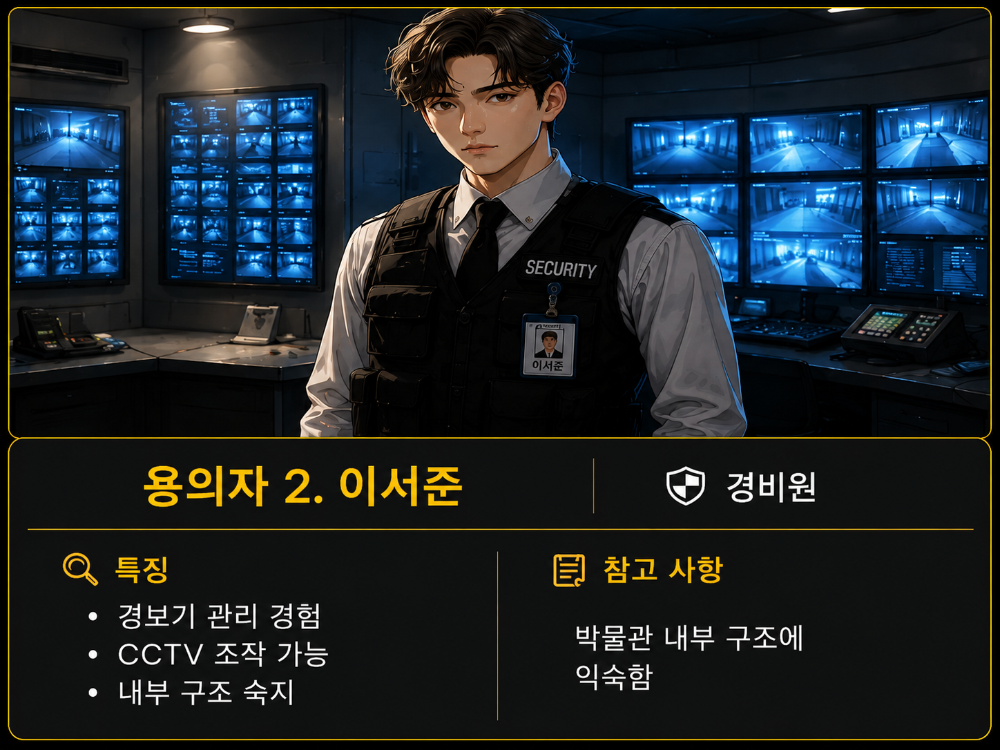
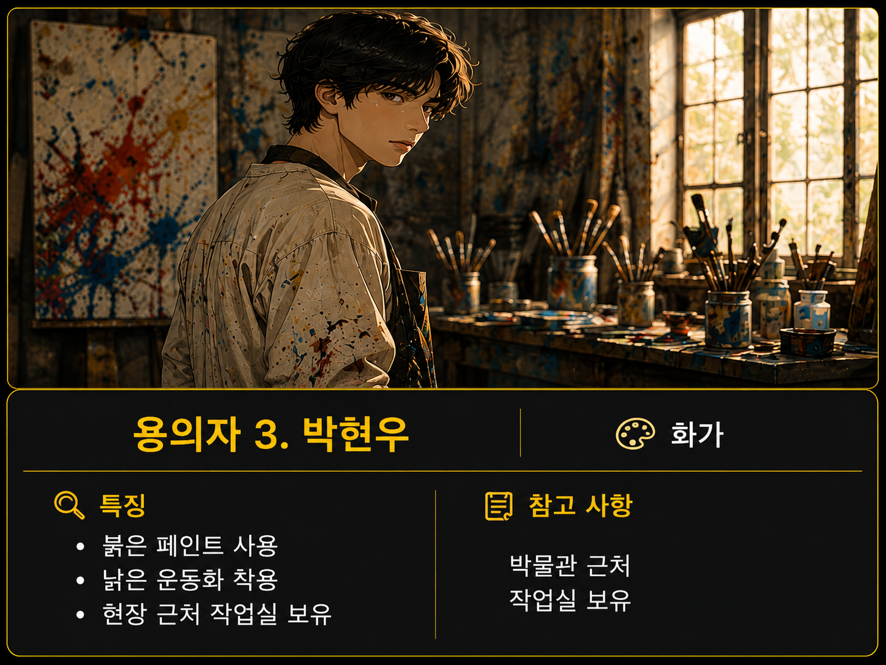

《비 오는 날의 도둑》
어젯밤 폭우가 내리던 가운데, 시립 박물관에서 귀중한 유물이 사라졌다.
현장에는 젖은 운동화 자국, 꺼져 있는 경보기, 조작된 CCTV 기록만이 남아 있었다.
당신은 특별 수사팀 탐정이다.
단서를 분석하고 논리적인 추리를 통해 진짜 범인을 찾아내라.
범인을 찾아보자
수사 단계 1/7
10:00

용의자 1. 김도윤
배달 기사
특징
비 오는 날 우비 착용, 큰 운동화 사용
참고 사항
사건 전후 야간 이동 기록 있음

용의자 2. 이서준
경비원
특징
경보기 관리 경험, CCTV 조작 가능
참고 사항
박물관 내부 구조에 익숙함

용의자 3. 박현우
화가
특징
붉은 페인트 사용, 낡은 운동화 착용
참고 사항
박물관 근처 작업실 보유
연역논증
귀납논증
유추논증
추리하기
힌트
이전 단계
사건 해결 성공!
범인 이서준이 박물관 앞에서 경찰에 체포되었습니다.